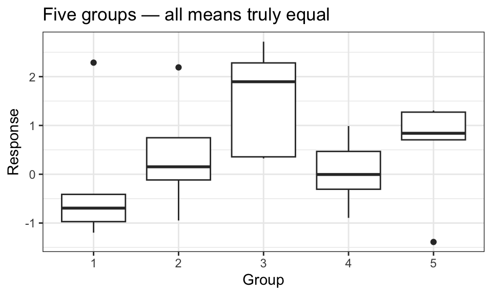
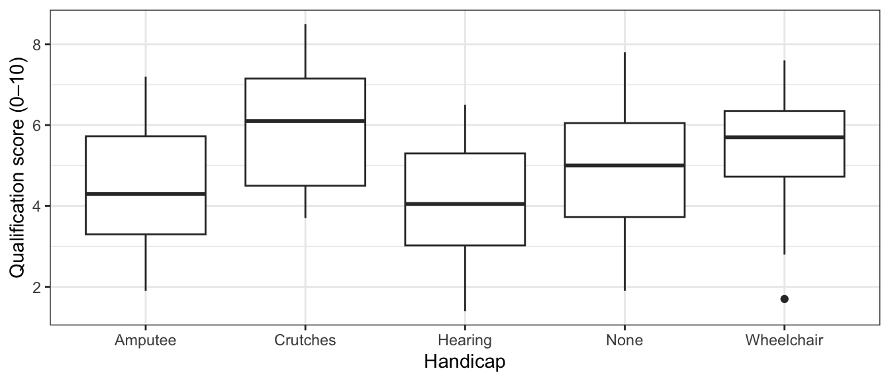
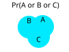
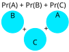
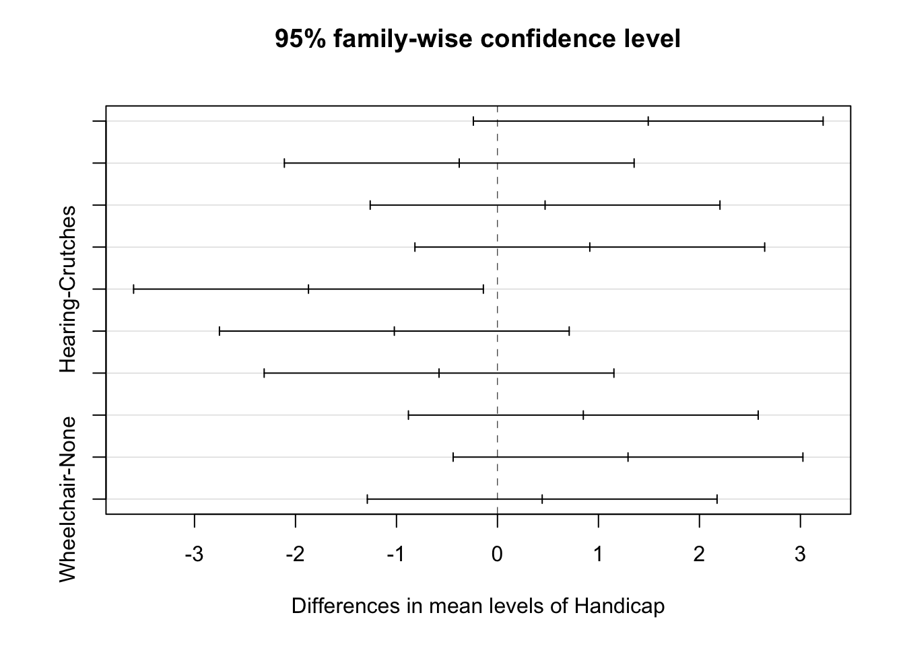

set.seed(7)
tvec <- rt(1000, df = 20)
pvalue <- 2 * pt(-abs(tvec), df = 20)
mean(pvalue < 0.05)[1] 0.062A \(p\)-value is the probability of seeing data as extreme as what was observed if \(H_0\) were true. When \(\alpha = 0.05\) and \(H_0\) is true, there is a 5% chance of a false positive (rejecting \(H_0\)) in any single test.
If we run \(m\) independent tests, all with true null hypotheses, and reject each at \(\alpha = 0.05\), we would expect to falsely reject \(0.05m\) of them. With \(m = 21\) pairwise tests (as in the Spock data), that’s about one spurious rejection on average — even when all means are identical.
set.seed(7)
tvec <- rt(1000, df = 20)
pvalue <- 2 * pt(-abs(tvec), df = 20)
mean(pvalue < 0.05)[1] 0.062Even though every test was simulated under \(H_0\), roughly 5% of the 1,000 \(p\)-values are below 0.05.

Consider the following five-group dataset where all means are truly equal:

Looking at the plot, groups 1 and 3 appear to have the largest difference. If we tested only that pair after peeking at the data, the naive \(p\)-value would be misleadingly small — we selected the pair because it looked extreme:
pairwise.t.test(df_snoop$y, df_snoop$x, p.adjust.method = "none")
Pairwise comparisons using t tests with pooled SD
data: df_snoop$y and df_snoop$x
1 2 3 4
2 0.41 - - -
3 0.03 0.14 - -
4 0.73 0.62 0.05 -
5 0.31 0.84 0.19 0.49
P value adjustment method: none Data snooping occurs when you select which hypotheses to test after looking at the data. It inflates the Type I error rate beyond \(\alpha\).
A planned comparison is a hypothesis test chosen before looking at the data — based on scientific reasoning, not on what the data suggest.
How do physical handicaps affect people’s perception of employment qualifications? Researchers prepared five videotaped job interviews in which the same actor appeared with a different apparent handicap in each tape. Seventy undergraduates were randomly assigned to view one tape and rate the applicant’s qualifications on a 0–10 scale.
case0601 <- read_csv("https://dcgerard.github.io/stat_302/data/case0601.csv")ggplot(case0601, aes(x = Handicap, y = Score)) +
geom_boxplot() +
labs(y = "Qualification score (0–10)")
Running all \(\binom{5}{2} = 10\) pairwise tests without adjustment:
pairwise.t.test(x = case0601$Score,
g = case0601$Handicap,
p.adjust.method = "none")
Pairwise comparisons using t tests with pooled SD
data: case0601$Score and case0601$Handicap
Amputee Crutches Hearing None
Crutches 0.018 - - -
Hearing 0.542 0.003 - -
None 0.448 0.103 0.173 -
Wheelchair 0.143 0.352 0.040 0.476
P value adjustment method: none A handful of \(p\)-values are below 0.05. But we ran 10 tests simultaneously — even if all null hypotheses were true we would expect \(10 \times 0.05 = 0.5\) false rejections on average. Are these moderate \(p\)-values genuine signals or lucky noise?
The family-wise error rate (FWER) is the probability of making at least one Type I error across a family of hypothesis tests.
The adjusted \(p\)-value for a test in a family is defined so that:
Rejecting when the adjusted \(p\)-value \(< \alpha\) guarantees that the FWER is at most \(\alpha\).
Procedure: Multiply each raw \(p\)-value by \(m\) (the total number of tests).
Conditions: Applies to any family of pre-planned tests; tests need not be pairwise comparisons.
Proof that the FWER \(\leq \alpha\): Let \(m_0\) be the number of tests where \(H_0\) is true and \(p_i\) the raw \(p\)-value for test \(i\).
\[\text{FWER} = Pr(mp_1 \leq \alpha \text{ or } \cdots \text{ or } mp_{m_0} \leq \alpha)\]
The key inequality is the Bonferroni (union) bound: for any events \(A_1, \ldots, A_k\),
\[Pr(A_1 \cup A_2 \cup \cdots \cup A_k) \leq Pr(A_1) + Pr(A_2) + \cdots + Pr(A_k)\]
illustrated below for three events:


Applying this bound:
\[\text{FWER} \leq Pr(mp_1 \leq \alpha) + \cdots + Pr(mp_{m_0} \leq \alpha) = \frac{\alpha}{m} + \cdots + \frac{\alpha}{m} = \frac{m_0 \alpha}{m} \leq \frac{m\alpha}{m} = \alpha\]
Procedure: Order the raw \(p\)-values from smallest to largest: \(p_{(1)} \leq p_{(2)} \leq \cdots \leq p_{(m)}\). The Holm-adjusted \(p\)-value for the \(k\)th smallest is \(\min\bigl((m - k + 1) \cdot p_{(k)},\; 1\bigr)\), applied sequentially so that adjusted values are non-decreasing.
Conditions: Same as Bonferroni — any pre-planned tests.
Advantage: Holm is uniformly more powerful than Bonferroni (it rejects at least as often) while still controlling the FWER at \(\alpha\).
Procedure: Uses the studentized range distribution to derive exact \(p\)-values and confidence intervals for all \(\binom{I}{2}\) pairwise comparisons simultaneously.
Conditions: Only valid for all pairwise comparisons in a balanced or unbalanced one-way ANOVA (pre-planned).
Advantage: Smaller adjusted \(p\)-values than Bonferroni or Holm when the goal is all pairwise tests.
Continuing with the handicap study (case0601):
aout_handicap <- aov(Score ~ Handicap, data = case0601)pairwise.t.test(x = case0601$Score,
g = case0601$Handicap,
p.adjust.method = "bonferroni")
Pairwise comparisons using t tests with pooled SD
data: case0601$Score and case0601$Handicap
Amputee Crutches Hearing None
Crutches 0.18 - - -
Hearing 1.00 0.03 - -
None 1.00 1.00 1.00 -
Wheelchair 1.00 1.00 0.40 1.00
P value adjustment method: bonferroni pairwise.t.test(x = case0601$Score,
g = case0601$Handicap,
p.adjust.method = "holm")
Pairwise comparisons using t tests with pooled SD
data: case0601$Score and case0601$Handicap
Amputee Crutches Hearing None
Crutches 0.17 - - -
Hearing 1.00 0.03 - -
None 1.00 0.72 0.87 -
Wheelchair 0.86 1.00 0.32 1.00
P value adjustment method: holm TukeyHSD() takes an aov() object and returns all pairwise comparisons with Tukey-adjusted \(p\)-values and confidence intervals:
tout <- TukeyHSD(aout_handicap)
tout Tukey multiple comparisons of means
95% family-wise confidence level
Fit: aov(formula = Score ~ Handicap, data = case0601)
$Handicap
diff lwr upr p adj
Crutches-Amputee 1.4929 -0.2389 3.2246 0.1233
Hearing-Amputee -0.3786 -2.1103 1.3532 0.9725
None-Amputee 0.4714 -1.2603 2.2032 0.9400
Wheelchair-Amputee 0.9143 -0.8174 2.6460 0.5781
Hearing-Crutches -1.8714 -3.6032 -0.1397 0.0278
None-Crutches -1.0214 -2.7532 0.7103 0.4686
Wheelchair-Crutches -0.5786 -2.3103 1.1532 0.8812
None-Hearing 0.8500 -0.8817 2.5817 0.6443
Wheelchair-Hearing 1.2929 -0.4389 3.0246 0.2348
Wheelchair-None 0.4429 -1.2889 2.1746 0.9517plot(tout)
Every confidence interval has the form \(\text{estimate} \pm \text{multiplier} \times SE\). Adjusting for multiple comparisons means using a larger multiplier:
| Method | Multiplier |
|---|---|
| Unadjusted (single test) | \(t_{n-I}(1 - \alpha/2)\) |
| Bonferroni (\(m\) tests) | \(t_{n-I}(1 - \alpha/(2m))\) |
| Tukey-Kramer | Studentized-range quantile (automatic via TukeyHSD()) |
A larger multiplier means wider intervals — correctly reflecting the additional uncertainty from testing many hypotheses.